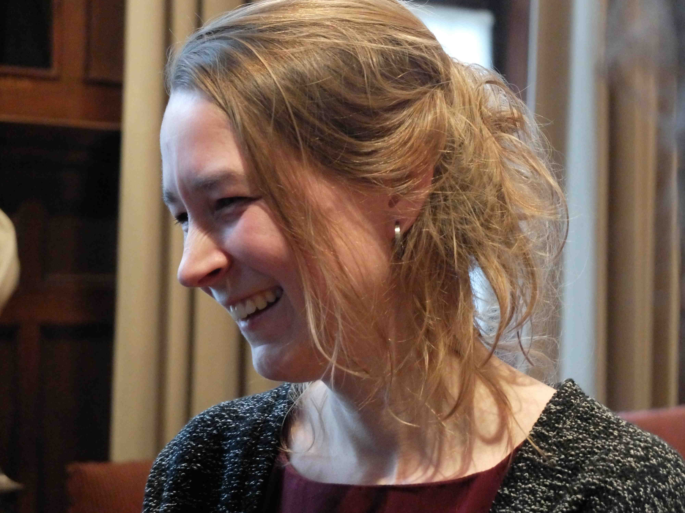

I am an experimental linguist working at Laboratoire Psychologie de la Perception, with Ranka Bijeljac-Babic and Thierry Nazzi, Judit Gervain and Irene de la Cruz Pavía in collaboration with Universität Potsdam with Barbara Höhle, Silvana Poltrock and Natalie Boll-Avetisyan. In 'Multilevel Prosodic Processing in a Cross-Linguistic Perspective' (ANR-DFG), we focus on the language-specific prosodic development on the lexical and phrasal level in French- and German-learning infants; in 'Crosslinguistic developmental comparison of the processing of consonants and vowels in early lexical acquisition' (ANR-DFG), we aim to identify the influence of experience with the native language on the role of consonants and vowels in language perception.
My PhD-work on the language-specific use of word stress in segmentation, with René Kager, took place in the context of 'Parsing and Metrical Structure: where Phonology meets Processing' (NWO) at Utrecht University and I did my work on mutual intelligibility (with Petra Hendriks, Dicky Gilbers, Charlotte Gooskens and Vincent van Heuven), linguistic distance (with John Nerbonne, Martijn Wieling and Charlotte Gooskens) and emphatic lengthening (With Jack Hoeksema and Dicky Gilbers) at the University of Groningen